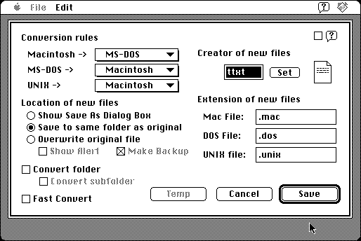

Download
TextToMac_1.32.zip (45K) TextToMac 1.32 repackaged into a zipped hfs disk image and checksum file. The disk image can be mounted with Mini vMac.
TextToMac_1.32.hqx (66K) TextToMac 1.32 in the original format.
copyright: Takahiro Sumiya
mod date: Sep 16, 1997
license: freeware
last known url
(gone)
“Converts the end-of-line code of text files between Macintosh, MS-DOS/Windows, and UNIX formats.” Requires System 7 or later.

If you find these downloads useful, please consider helping the Gryphel Project, which hosts them.
Here are the md5 checksums for the downloads, signed with Gryphel Key 5:
--------- GRY SIGNED TEXT --------- de0f7029fdbd6894ca6b6c1dcedc96d5 TextToMac_1.32.zip c491863758423dca50fd8cb05ccdf4d9 TextToMac_1.32.hqx ------- BEGIN GRY SIGNATURE ------- Gry/4Xa8CFcUzxdN/KRWNj59zMWos4LdccXKBhsjYw4oeQG4fE2tLN/84toIO4ur qkDGPVwSspG23kbhWdvEdt/Nj1RFpGK+PdSYZHG6z8/xEsVRaLV9bRZpEhxK91R8 tnGqi9giy2jCWJ1koJfaRqDcRe5hUM+lmTQQLaanK/H68d6t/52gUjYfWwQBG+8u -------- END GRY SIGNATURE --------